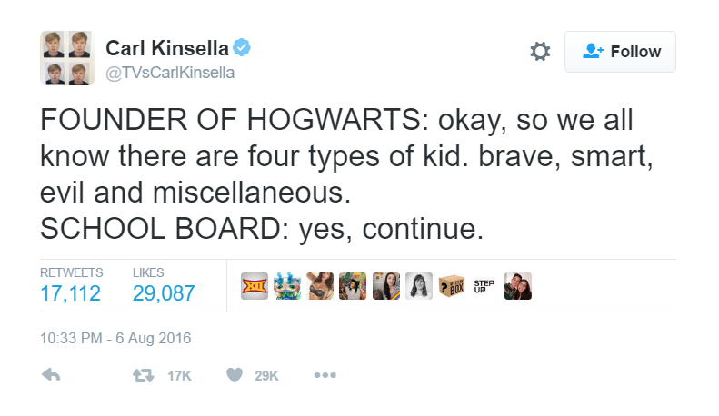

J.K. Rowling teaches us of four types of child, namely: the Ravenclaw, the Slytherin, the Gryffindor, and the Hufflepuff.
The Ravenclaw, what says she? “What are all the spells, jinxes, hexes, charms, divinations, potions, and enchantments, and how do they work?” You must thus reply to her with all of the laws of Hogwarts, that one may not enroll in Advanced Thaumaturgical Theory until after completing at least a semester of first-year Transfiguration.
The Slytherin, what says he? “How will graduating from this school benefit me?” “Benefit me,” he says, and not “benefit us”, thus excluding himself from the community. Therefore you must cast a Bat-Bogey Hex upon him and say, “Well, I don’t know about you, but I’m going to leverage my social connections into a successful career.” “I don’t know about you,” because if he keeps up that attitude, he won’t have any social connections to leverage.
The Gryffindor, what says he? “When’s Quidditch?” You should tell him: “Quidditch is at the end of the day, after all of your classes.”
And as for the Hufflepuff who is just happy to be there, you must begin the conversation for her, as the text states: “I think the feast’s already started.”
Magister Xenophilius used to say: whoever does not discuss the following three things on Pesach has not fulfilled his duty…